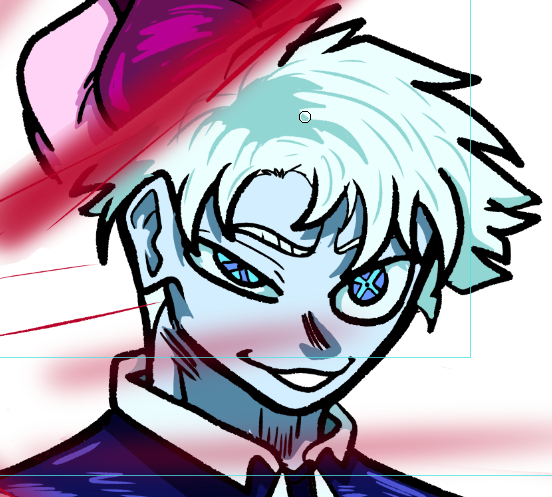

Kronoz Trigger é um guerreiro extraordinário de cabelos brancos que possui um poder conhecido como Impulso Hipersônico. Essa habilidade aumenta todos os seus atributos físicos e mentais a níveis absurdos, permitindo que sua velocidade, força, resistência, reflexos e capacidade de raciocínio evoluam de forma hipersônica durante o combate.
Quando ativa seu poder, Kronoz se torna praticamente impossível de acompanhar. Seus movimentos geram ondas de choque no ambiente, e seus ataques podem atingir adversários antes mesmo que eles percebam o que aconteceu. Sua velocidade é tão elevada que ele consegue atravessar grandes distâncias em instantes, desviar de ataques com facilidade e reagir a situações complexas em frações de segundo. Apesar de seu imenso poder, Kronoz possui uma personalidade descontraída e extremamente confiante. Ele costuma agir de maneira brincalhona, fazendo piadas e provocando seus oponentes durante as batalhas. Seu jeito carismático faz com que muitas pessoas o considerem alguém divertido e agradável de se ter por perto. Embora goste de brincar e provocar, Kronoz leva a proteção de seus aliados muito a sério. Quando alguém importante está em perigo, ele abandona seu lado descontraído e revela sua verdadeira determinação. Nesse momento, seu poder hipersônico alcança níveis ainda maiores, transformando-o em uma força quase imparável no campo de batalha.
| Habilidades | Efeito | Perigo |
|---|---|---|
| Hypersonic | TODOS os seus atributos fisícos, ganaham um aumento hipersônico, força, percepção, e principalmente velocidade | Extremo |
Com seus cabelos brancos marcantes, sua velocidade avassaladora e sua presença carismática, Kronoz Trigger é reconhecido como um dos guerreiros mais poderosos de sua geração, inspirando aliados e intimidando inimigos por onde passa.
Personagem usado como base:
Satoru Gojo (Jujutsu Kaisen)